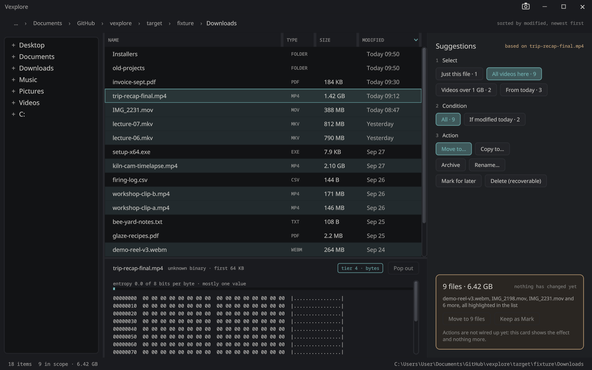
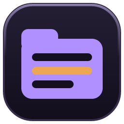
Vexplore
A file explorer that suggests instead of asking.
Seven desktop applications drawn live on the GPU, which know about each other. One line installs them all.
Windows: paste this into PowerShell and press Enter
irm https://sibarum.github.io/install.ps1 | iexTo open PowerShell, press Win + X and choose Terminal (on Windows 10, Windows PowerShell). Running the same line again updates everything.
Needs Windows 10 or 11 (64-bit) and a graphics card with an up-to-date driver: everything here draws with Vulkan.
Desktop applications built on the VexelRay stack: a file explorer, a text editor, an image viewer, a terminal, a calculator, and fluid and rigid-body simulations. They are separate programs that know about each other, so a file in the explorer opens in the editor or the viewer, and the editor can show a file in the explorer.


A file explorer that suggests instead of asking.
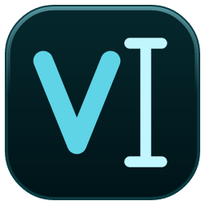
A tabbed text editor with a file navigator, on the VexelRay stack.
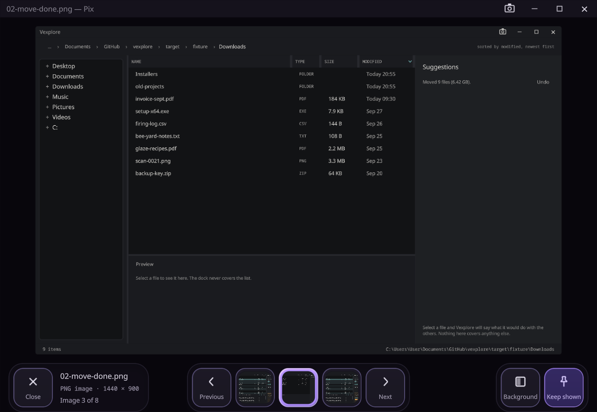
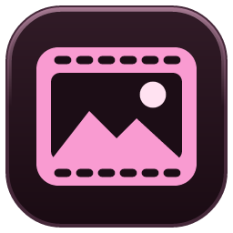
An image viewer: one picture, as large as the window allows, and the rest of its folder a key press away.
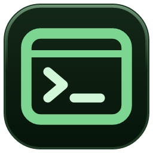
A terminal window that wraps the native Windows shell over ConPTY, built on the VexelRay stack.
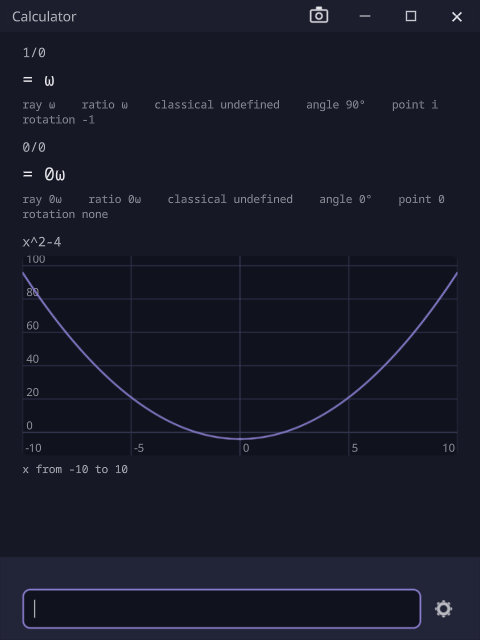
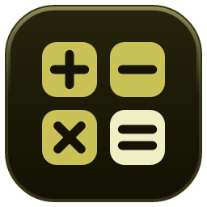
A small calculator window onto cott-engine.
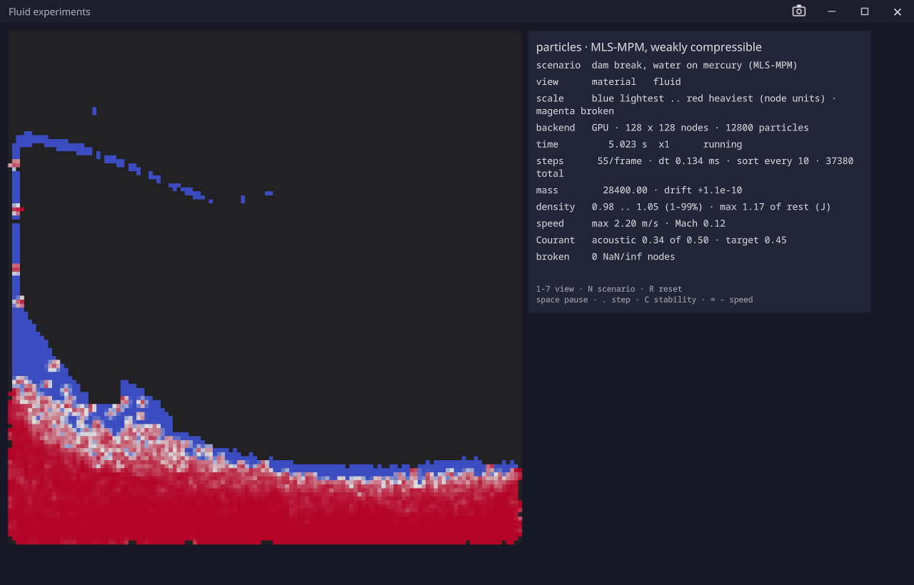
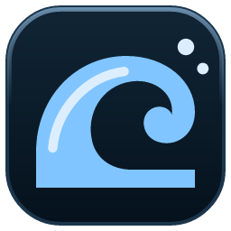
Fluid simulation experiments on the VexelRay stack: dam breaks, mixing, heat and a 3D dam break, live on the GPU.
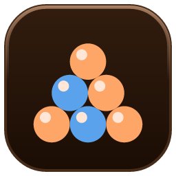
Rigid-body simulation experiments on the VexelRay stack: spheres that collide, bounce, spin and roll, live on the GPU.
VexelRay is also a framework: Java 25, compiled to a native Windows executable and drawn with Vulkan. Every application above is built on it. Yours can be too, whether a coding agent writes most of it or you write all of it.
One command generates a working application with tabs, a file navigator, settings that persist, and tests that build the window without a GPU. Vex, Calculator and MainFrame all started this way.
Every repository has a CLAUDE.md with the rules the code does not show. ottermate lets a coding agent drive and screenshot the window it built, so it checks its own work by looking at it.
Vex highlights Java, jumps to any declaration in your project or in the framework, and shows a folder's Maven modules before you open it. MainFrame and Vexplore work alongside it.
Everything the install line does, and how to undo it.
It is a fair question, so read the script first. It is one file: install.ps1. What it does:
The script, the manifests and the releases are all in one public repository, sibarum/vexelray-dist.
Everything is per user, and everything is undone by uninstalling:
%LOCALAPPDATA%\ProgramsPATH, so vexplore, text-editor, pix, mainframe and calculator work from a terminalTo leave some of that out, set any of these in the same PowerShell window before the install line:
$env:INSTALL_NO_SHORTCUTS = '1'$env:INSTALL_NO_PATH = '1'$env:INSTALL_NO_ASSOCIATIONS = '1'Set INSTALL_ONLY in the same PowerShell window before the install line:
$env:INSTALL_ONLY = 'vexplore,text-editor'The ids are vexplore, text-editor, pix, mainframe, calculator, fluid-sim and rigid-sim.
Run the install line again. Each application is updated to its latest version, and one that is already current is left alone. To reinstall anyway, set $env:INSTALL_FORCE = '1' first.
Use Settings › Apps › Installed apps, where each application has its own entry. Or, from PowerShell, list what is installed and remove all of it:
& "$env:LOCALAPPDATA\Programs\Vexplore\uninstall.cmd" -List& "$env:LOCALAPPDATA\Programs\Vexplore\uninstall.cmd" -AllThe uninstaller removes exactly what was installed: files, shortcuts, PATH entries, file types and the Settings entries. Files you put in those folders yourself are left alone.
Press Win + R, paste this, and press Enter:
powershell -NoExit -Command "irm https://sibarum.github.io/install.ps1 | iex"Anything is useful: it did not install, a window looked wrong, something was confusing, or you just liked it. Open an issue and say which application, what you did and what happened. A screenshot helps.